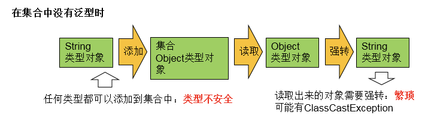
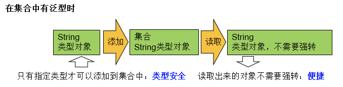
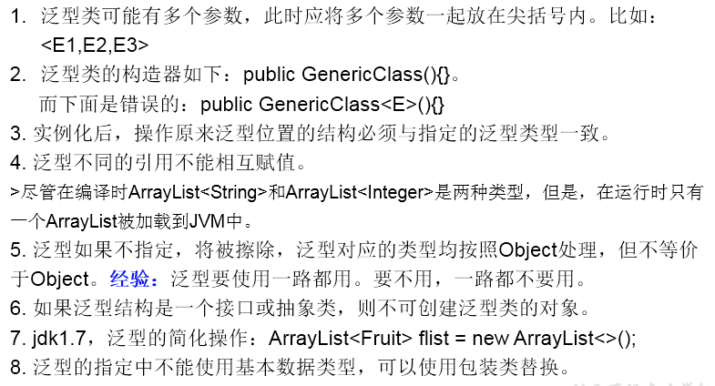
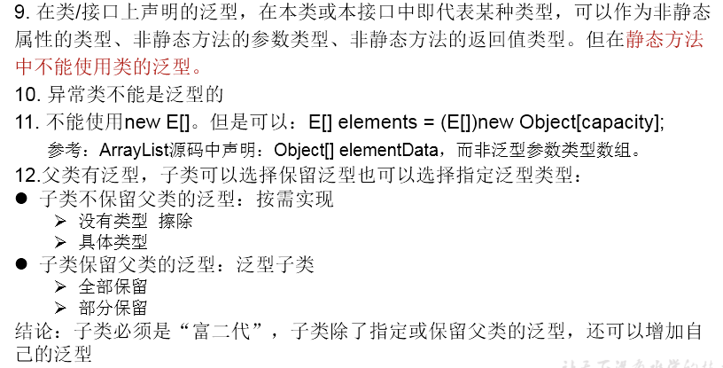

1 泛型的理解
所谓泛型，就是允许在定义类、接口时通过一个标识表示类中某个属性的类型或者是某个方法的返回值及参数类型。这个类型参数将在使用时（例如，继承或实现这个接口，用这个类型声明变量、创建对象时）确定（即传入实际的类型参数，也称为类型实参）。
集合容器类在设计阶段/声明阶段不能确定这个容器到底实际存的是什么类型的对象，所以在JDK1.5之前只能把元素类型设计为Object，JDK1.5之后使用泛型来解决。因为这个时候除了元素的类型不确定，其他的部分是确定的，例如关于这个元素如何保存，如何管理等是确定的，因此此时把元素的类型设计成一个参数，这个类型参数叫做泛型。
Collection<E>，List<E>，ArrayList<E>这个<E>就是类型参数，即泛型。
2 泛型在集合中的使用
2.1 在集合中没有泛型时
@Test
public void test1(){
ArrayList list = new ArrayList();
//需求：存放学生的成绩
list.add(78);
list.add(76);
list.add(89);
list.add(88);
//问题一：类型不安全
// list.add("Tom");
for(Object score : list){
//问题二：强转时，可能出现ClassCastException
int stuScore = (Integer) score;
System.out.println(stuScore);
}
}
2.2 在集合中使用泛型
@Test
public void test2(){
ArrayList<Integer> list = new ArrayList<Integer>();
list.add(78);
list.add(87);
list.add(99);
list.add(65);
//编译时，就会进行类型检查，保证数据的安全
// list.add("Tom");
//方式一：
// for(Integer score : list){
// //避免了强转操作
// int stuScore = score;
//
// System.out.println(stuScore);
//
// }
//方式二：
Iterator<Integer> iterator = list.iterator();
while(iterator.hasNext()){
int stuScore = iterator.next();
System.out.println(stuScore);
}
}
//在集合中使用泛型的情况：以HashMap为例
@Test
public void test3(){
// Map<String,Integer> map = new HashMap<String,Integer>();
//jdk7新特性：类型推断
Map<String,Integer> map = new HashMap<>();
map.put("Tom",87);
map.put("Jerry",87);
map.put("Jack",67);
// map.put(123,"ABC");
//泛型的嵌套
Set<Map.Entry<String,Integer>> entry = map.entrySet();
Iterator<Map.Entry<String, Integer>> iterator = entry.iterator();
while(iterator.hasNext()){
Map.Entry<String, Integer> e = iterator.next();
String key = e.getKey();
Integer value = e.getValue();
System.out.println(key + "----" + value);
}
}总结：
- 集合接口或集合类在jdk5.0时都修改为带泛型的结构。
- 在实例化集合类时，可以指明具体的泛型类型。
- 指明完以后，在集合类或接口中凡是定义类或接口时，内部结构（比如：方法、构造器、属性等）使用到类的泛型的位置，都指定为实例化的泛型类型。比如：add(E e) —> 实例化以后：add(Integer e)
- 注意点：泛型的类型必须是类，不能是基本数据类型。需要用到基本数据类型的位置，拿包装类替换。
- 如果实例化时，没指明泛型的类型。默认类型为java.lang.Object类型。
3 自定义泛型类、泛型接口、泛型方法
【Order.java】
public class Order<T> {
String orderName;
int orderId;
//类的内部结构就可以使用类的泛型
T orderT;
public Order(){
//编译不通过
// T[] arr = new T[10];
//编译通过
T[] arr = (T[]) new Object[10];
}
public Order(String orderName,int orderId,T orderT){
this.orderName = orderName;
this.orderId = orderId;
this.orderT = orderT;
}
//如下的个方法都不是泛型方法
public T getOrderT(){
return orderT;
}
public void setOrderT(T orderT){
this.orderT = orderT;
}
@Override
public String toString() {
return "Order{" +
"orderName='" + orderName + '\'' +
", orderId=" + orderId +
", orderT=" + orderT +
'}';
}
//静态方法中不能使用类的泛型。
// public static void show(T orderT){
// System.out.println(orderT);
// }
public void show(){
//编译不通过
// try{
//
//
// }catch(T t){
//
// }
}
//泛型方法：在方法中出现了泛型的结构，泛型参数与类的泛型参数没任何关系。
//换句话说，泛型方法所属的类是不是泛型类都没关系。
//泛型方法，可以声明为静态的。原因：泛型参数是在调用方法时确定的。并非在实例化类时确定。
public static <E> List<E> copyFromArrayToList(E[] arr){
ArrayList<E> list = new ArrayList<>();
for(E e : arr){
list.add(e);
}
return list;
}
}【SubOrder.java】
public class SubOrder extends Order<Integer> {//SubOrder:不是泛型类
public static <E> List<E> copyFromArrayToList(E[] arr){
ArrayList<E> list = new ArrayList<>();
for(E e : arr){
list.add(e);
}
return list;
}
}实例化时，如下的代码是错误：
SubOrder<Integer> o = new SubOrder<>();
【SubOrder1.java】
public class SubOrder1<T> extends Order<T> {//SubOrder1<T>:仍然是泛型类
}【测试】
@Test
public void test1(){
//如果定义了泛型类，实例化没指明类的泛型，则认为此泛型类型为Object类型
//要求：如果大家定义了类是带泛型的，建议在实例化时要指明类的泛型。
Order order = new Order();
order.setOrderT(123);
order.setOrderT("ABC");
//建议：实例化时指明类的泛型
Order<String> order1 = new Order<String>("orderAA",1001,"order:AA");
order1.setOrderT("AA:hello");
}
@Test
public void test2(){
SubOrder sub1 = new SubOrder();
//由于子类在继承带泛型的父类时，指明了泛型类型。则实例化子类对象时，不再需要指明泛型。
sub1.setOrderT(1122);
SubOrder1<String> sub2 = new SubOrder1<>();
sub2.setOrderT("order2...");
}
@Test
public void test3(){
ArrayList<String> list1 = null;
ArrayList<Integer> list2 = new ArrayList<Integer>();
//泛型不同的引用不能相互赋值。
// list1 = list2;
Person p1 = null;
Person p2 = null;
p1 = p2;
}
//测试泛型方法
@Test
public void test4(){
Order<String> order = new Order<>();
Integer[] arr = new Integer[]{1,2,3,4};
//泛型方法在调用时，指明泛型参数的类型。
List<Integer> list = order.copyFromArrayToList(arr);
System.out.println(list);
}注意：


4 泛型在继承上的体现
虽然类A是类B的父类，但是G<A>和G<B>二者不具备子父类关系，二者是并列关系。
补充：类A是类B的父类，A<G>是 B<G>的父类。
@Test
public void test1(){
Object obj = null;
String str = null;
obj = str;
Object[] arr1 = null;
String[] arr2 = null;
arr1 = arr2;
//编译不通过
// Date date = new Date();
// str = date;
List<Object> list1 = null;
List<String> list2 = new ArrayList<String>();
//此时的list1和list2的类型不具子父类关系
//编译不通过
// list1 = list2;
/*
反证法：
假设list1 = list2;
list1.add(123);导致混入非String的数据。出错。
*/
show(list1);
show1(list2);
}
public void show1(List<String> list){
}
public void show(List<Object> list){
}
@Test
public void test2(){
AbstractList<String> list1 = null;
List<String> list2 = null;
ArrayList<String> list3 = null;
list1 = list3;
list2 = list3;
List<String> list4 = new ArrayList<>();
}5 通配符
通配符：?
类A是类B的父类，G<A>和G<B>是没关系的，二者共同的父类是：G<?>
@Test
public void test3(){
List<Object> list1 = null;
List<String> list2 = null;
List<?> list = null;
list = list1;
list = list2;
//编译通过
// print(list1);
// print(list2);
//
List<String> list3 = new ArrayList<>();
list3.add("AA");
list3.add("BB");
list3.add("CC");
list = list3;
//添加(写入)：对于List<?>就不能向其内部添加数据。
//除了添加null之外。
// list.add("DD");
// list.add('?');
list.add(null);
//获取(读取)：允许读取数据，读取的数据类型为Object。
Object o = list.get(0);
System.out.println(o);
}
public void print(List<?> list){
Iterator<?> iterator = list.iterator();
while(iterator.hasNext()){
Object obj = iterator.next();
System.out.println(obj);
}
}限制条件的通符的使用。? extends A：G<? extends A>可以作为G<A>和G<B>的父类，其中B是A的子类。
? super A：G<? super A>可以作为G<A>和G<B>的父类，其中B是A的父类。
@Test
public void test4(){
List<? extends Person> list1 = null;
List<? super Person> list2 = null;
List<Student> list3 = new ArrayList<Student>();
List<Person> list4 = new ArrayList<Person>();
List<Object> list5 = new ArrayList<Object>();
list1 = list3;
list1 = list4;
// list1 = list5;
// list2 = list3;
list2 = list4;
list2 = list5;
//读取数据：
list1 = list3;
Person p = list1.get(0);
//编译不通过
//Student s = list1.get(0);
list2 = list4;
Object obj = list2.get(0);
////编译不通过
// Person obj = list2.get(0);
//写入数据：
//编译不通过
// list1.add(new Student());
//编译通过
list2.add(new Person());
list2.add(new Student());
}